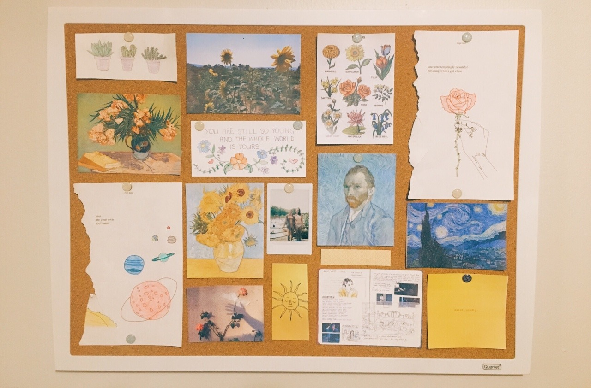
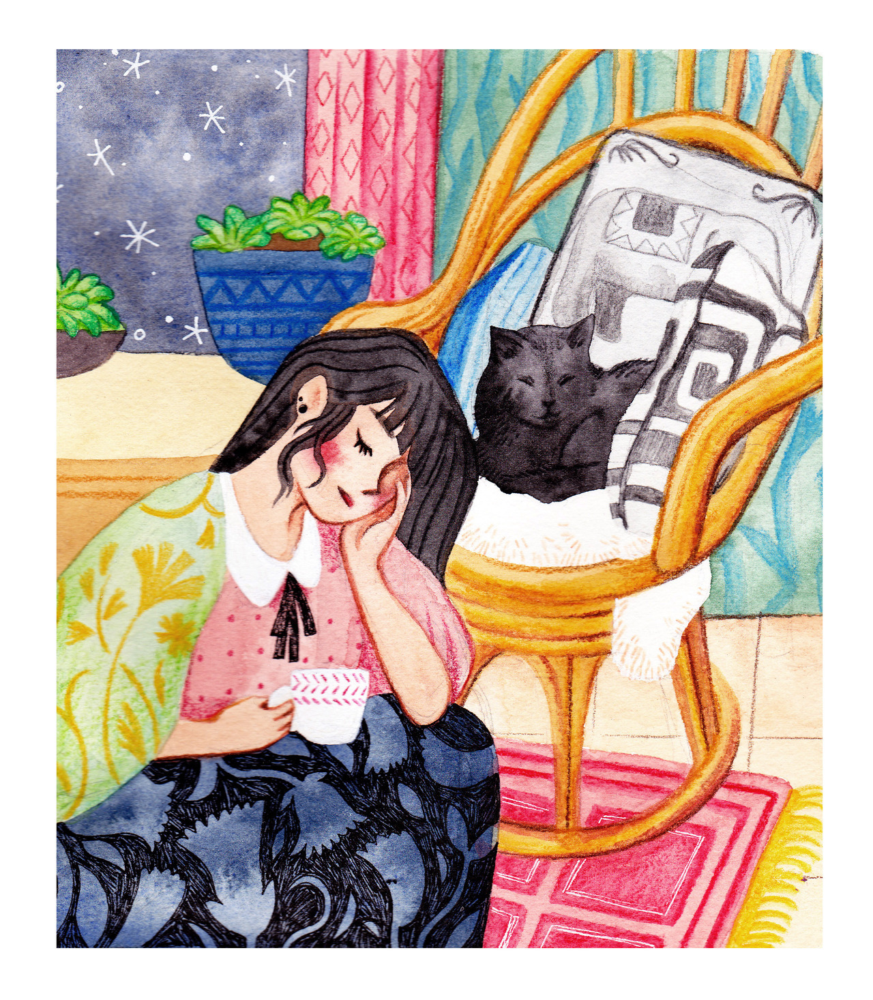

1. Some quick example text to build on the card title and make up the bulk of the card's content.
2. Some quick example text to build on the card title and make up the bulk of the card's content.
3. Some quick example text to build on the card title and make up the bulk of the card's content.
An article